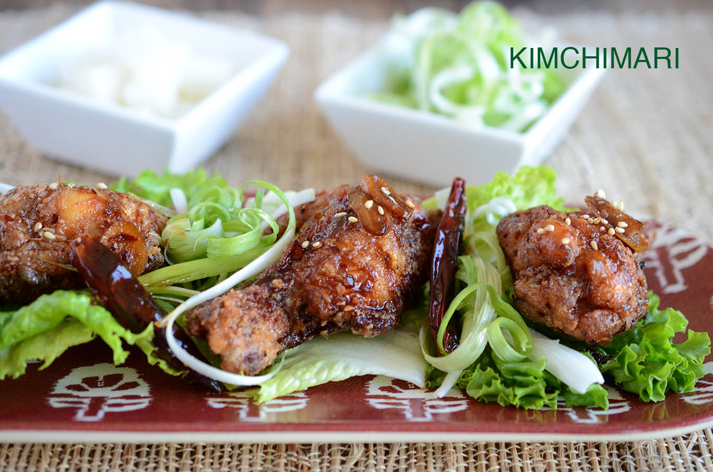

Korean Fried Chicken

Description
Dakganjeong - the most traditional Korean fried chicken that is seasoned,
dredged just with corn starch/potato starch, fried twice and then coated
with sweet garlic soy sauce glaze.
Ingredients
- 2 lb chicken wings or drummetts
- 1 1/2 cup corn starch
- Vegetable or Canola Oil for frying
Seasoning for chicken
- 1/2 tsp Sea Salt
- 1/4 tsp black pepper
- 1 Tbsp rice wine
- 1/4 tsp garlic powder
- 1/4 tsp onion powder
- 1/8 tsp ginger powder
Sweet Garlic Soy Glaze
- 3 Tbsp jin ganjang
- 2 Tbsp sugar
- 1 Tbsp water
- 2 Tbsp rice wine or white wine
- 1 tsp sesame oil
- 1 tsp vegetable oil
- 1 tsp chopped ginger
- 1 tsp red pepper seeds or red pepper flakes
- 4 cloves of garlic
- 3 dried red chilis
- sesame seeds
Steps
-
Clean chicken wings by removing any excess fat. If using whole wings,
cut at the joint so that you have 2 pieces. Also cut off the wing tip
and discard.
-
Put chicken wings in a bowl and season with salt, pepper, rice wine,
ginger, garlic and onion powder. Massage wings and leave for few
minutes.
-
Heat vegetable or canola oil in a fryer pot or any heavy bottom pot. Oil
should be at least 2 inches deep in the pot. Heat oil on high heat for
about 8 minutes or until it reaches 325°F (160°C). If you don't have a
thermometer, you can also check by dropping couple crystals of sea salt
or kosher salt. It should make a loud popping noise as it reaches the
bottom.
-
While oil is heating, make the glaze. Heat a small sauce pot or pan over
medium high heat. Add 1 tsp of sesame oil and 1 tsp of vegetable oil and
sauté dried red Japones chiles and garlic slivers until slightly brown
and fragrant. About 30 seconds.
-
Add to chili oil, soy sauce, rice wine, sugar, ginger, water and crushed
red pepper flakes. Mix and bring to boil. Then simmer for about 3-4
minutes. Turn off heat and set aside.
- Dredge chicken wings in corn starch.
-
When the oil is hot enough, drop the wings in the fryer. Do not add too
many pieces (just enough to take up one layer of space in the pot)
because the temperature will drop too much.
- Fry wings for about 6-8 minutes or until light golden brown.
-
Take wings out of oil and let oil drain away buy either using a basket
or letting them cool for few minutes on paper towel. Repeat above steps
and fry rest of chicken wings. Let them cool for few minutes.
-
Before frying the wings the 2nd time, have either a bowl or frying pan
ready next to the fryer so that you can toss the chicken wings with the
sweet garlic soy glaze right when it comes out of the fryer.
-
Fry the wings a second time again at 325°F (160°C) for about 2-3 minutes
this time. Until it becomes nicely golden brown.
-
After draining the oil from wings, immediately transfer the hot wings
onto a bowl/pan, add glaze and toss. Use about 1 Tbs soy glaze for about
5 wings. Wings should absorb most of the sauce.
- Serve when warm!